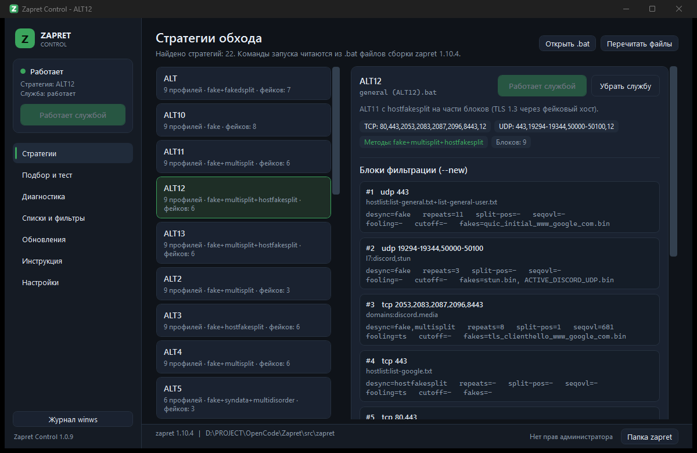
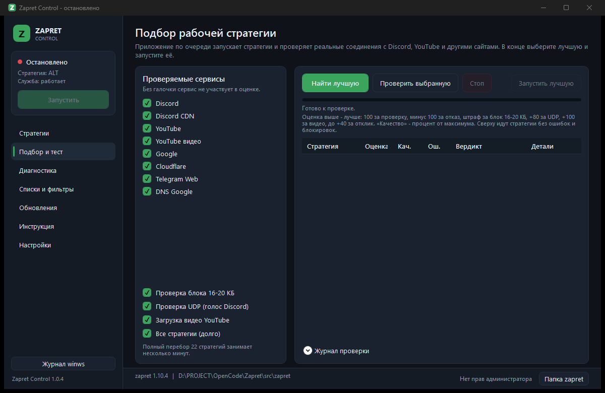
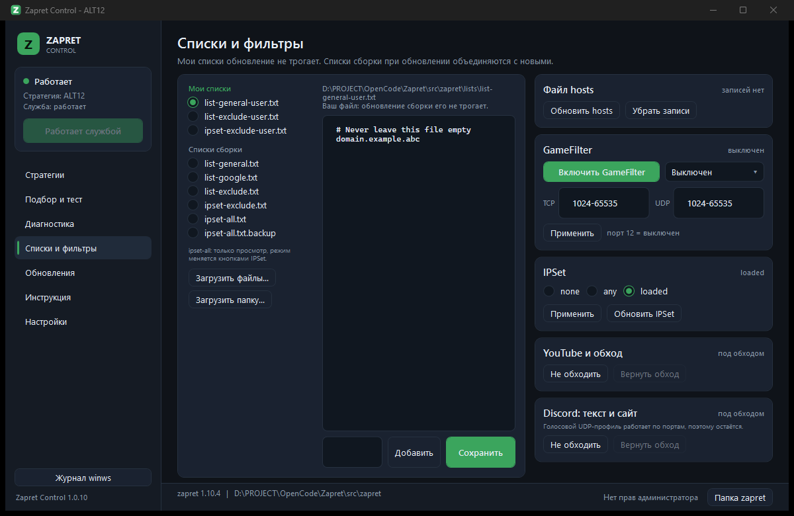
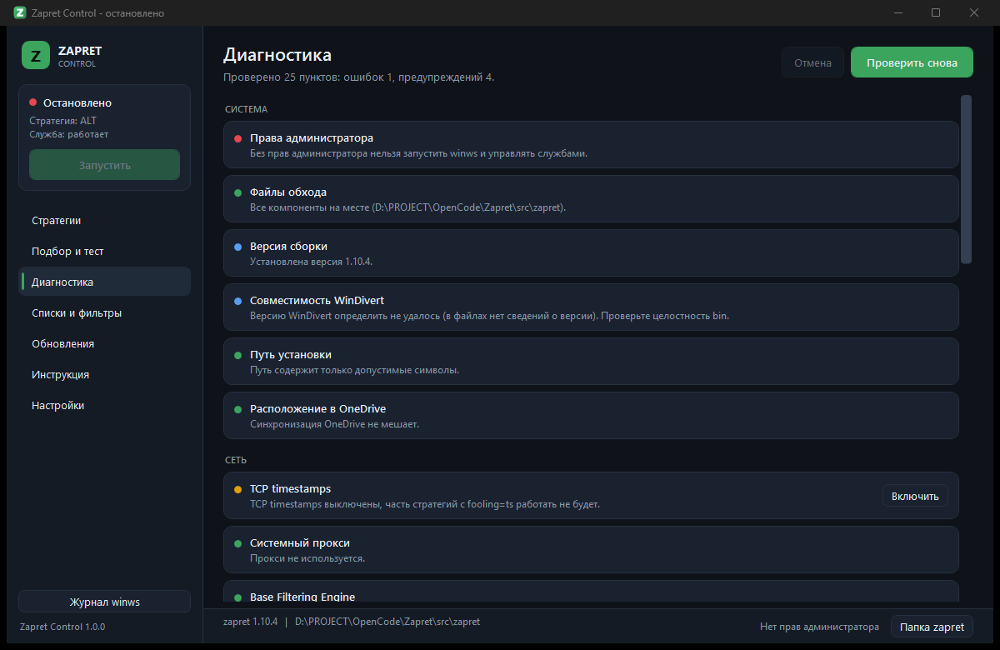
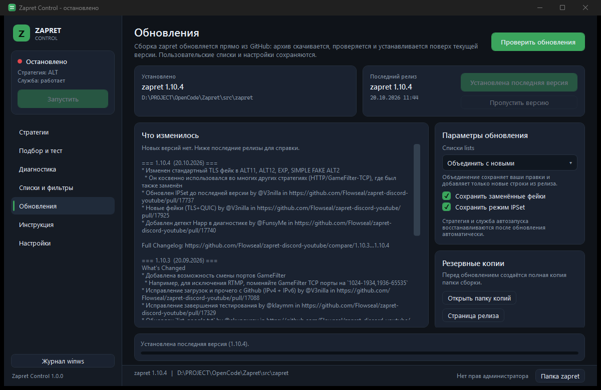

Zapret Control - графическая оболочка для сборки zapret-discord-youtube. Она запускает программу обхода
winws из вашей папки и позволяет управлять ей мышкой, без консоли и bat-файлов.
Zapret Control не является средством обхода. Это только графическая оболочка для проекта zapret-discord-youtube (движок zapret от bol-van). Своего механизма обхода, VPN или прокси в приложении нет, трафик через сторонние серверы не идёт: оно запускает winws.exe из вашей папки со сборкой.
Обход выполняет отдельная программа winws из папки сборки. Приложение лишь готовит для неё команду,
следит за процессом и показывает результат. Поэтому папка со сборкой обязательна: приложение не содержит
собственных «движков» обхода.
Сборка распространяется отдельно (github.com/Flowseal/zapret-discord-youtube) по лицензии MIT.
| Требование | Пояснение |
|---|---|
| Windows 10 или 11, 64 бита | Другие версии Windows не поддерживаются. |
| Права администратора | Нужны для перехвата трафика и управления службой. Windows запросит подтверждение при запуске. |
| Папка со сборкой zapret | Распакованный архив, в котором есть папка bin с файлом winws.exe. |
| Интернет | Для обновлений. Для самой работы обхода интернет нужен всегда, но приложение работает и без сети. |
| Свободное место | Около 200 МБ для приложения и 10 МБ для сборки и резервных копий. |
WinDivert подозрительным: он перехватывает сетевые пакеты.
Это не вирус, но папку приложения и папку сборки лучше добавить в исключения.
ZapretControl.exe (около 160 МБ) - всё внутри, ничего устанавливать не нужно. Вариант без встроенного рантайма .NET больше не выпускается.
Приложение не требует установки: это обычный exe-файл. Порядок действий:
Например, C:\ZapretControl. Не запускайте его прямо из архива: сначала распакуйте.
Распакуйте архив сборки в подпапку zapret рядом с приложением. Тогда оно найдёт её само.
Можно держать сборку и в любом другом месте: папку выберете вручную.
Windows покажет запрос прав администратора. Нажмите «Да». Без этих прав обход работать не будет. При первом запуске приложение откроет короткую инструкцию.
В нижней строке окна видно версию сборки и путь к ней. Если написано «Сборка zapret не найдена», откройте «Настройки» и укажите папку вручную.

Показывает версию сборки, путь к ней и время работы обхода. Кнопка «Папка zapret» открывает папку сборки в проводнике.
Приложение ищет сборку автоматически: рядом с собой, в подпапке zapret и в типичных местах.
Если поиск не удался, откройте «Настройки».
bin\winws.exe, папки lists и utils.C:\zapret или C:\ZapretControl\zapret.
Сменить папку можно в любой момент: приложение запомнит выбор и перечитает стратегии.
Стратегия - это набор правил, как именно обманывать провайдера. Универсальной нет: у разных провайдеров и даже районов работают разные. Поэтому приложение умеет проверять их автоматически.

| Столбец | Значение |
|---|---|
| Оценка | Итоговый балл: успешные соединения, отсутствие блокировок и скорость отклика. |
| Проверки | Сколько проверок прошло из общего числа. Лучше, когда совпадает, например 16/16. |
| Отклик | Среднее время ответа сайтов в миллисекундах. Меньше - лучше. |
| Вердикт | «Всё работает», «частично», «есть отказы» или «ошибка». |
Кроме сайтов проверяются ещё две вещи:
В таблице есть колонки «Ошибки» и «Качество». Оценка выше - лучше, но сначала смотрите на ошибки: стратегия с ошибками не должна стоять выше чистой. «Качество» показывает процент от максимума при текущем наборе проверок. Если верхние строки отличаются на 50 баллов и меньше, приложение пишет «равноценные кандидаты»: проверьте две-три стратегии вручную, разница между ними в пределах погрешности.
Если ни одна стратегия не дала полного результата, выберите лучшую из имеющихся и проверьте вручную. Часто «частично» на тесте означает, что YouTube работает, а Discord нет, или наоборот.
Кнопка «Журнал winws» показывает строку запуска, сообщения процесса и код завершения. Этот файл полезно приложить, если вы просите помощи.
Чтобы не запускать приложение вручную каждый раз, установите обход как службу Windows.
Автозапуск самого приложения (чтобы окно было под рукой) включается отдельно: «Настройки» → «Запускать Zapret Control при входе в Windows».
По умолчанию обход работает с сайтами и голосом Discord. Игры используют другие порты, поэтому для них есть отдельный режим GameFilter.
GameFilter находится в разделе «Списки и фильтры», в правой колонке:
Списки определяют, для каких сайтов включается обход. Они лежат в папке lists внутри сборки.

| Файл | Назначение |
|---|---|
| list-general.txt | Основной список доменов, которые обходить. |
| list-general-user.txt | Ваши домены. Этот файл приложение никогда не изменяет. |
| list-exclude.txt | Исключения: эти домены обход не трогает. |
| list-exclude-user.txt | Ваши исключения. |
| ipset-all.txt | Список подсетей для режима IPSet. |
list-general-user.txt.
В группе «Списки сборки» доступны все служебные файлы: list-general.txt,
list-google.txt, list-exclude.txt, ipset-exclude.txt,
ipset-all.txt и его резервная копия. Первые четыре можно править, правки объединяются
при обновлении. Файлы IPSet доступны только для просмотра: режим меняется кнопками IPSet.
В том же разделе обновляются список IPSet и записи файла hosts. Обновление hosts добавляет записи между служебными маркерами, поэтому их можно убрать одной кнопкой. Карточка «Discord: текст и сайт» выключает обход доменов Discord; голосовой UDP-профиль при этом остаётся, потому что он работает по портам.
В блоке файлов есть кнопки «Загрузить файлы...» и «Загрузить папку...». Приложение берёт файлы с теми же
именами, что лежат в lists, и объединяет их с текущими: новые строки добавляются, дубликаты
убираются, папка lists целиком сохраняется в резервную копию. После импорта обход перезапускается.
Бывает, что видео долго запускается, замирает и снова идёт, а без обхода YouTube работает нормально. Значит стратегия мешает именно видео. В блоке «YouTube и обход» нажмите «Не обходить YouTube»: домены YouTube убираются из обхода, Discord остаётся под ним, обход перезапускается автоматически. Кнопка «Вернуть обход YouTube» отменяет изменение.

Раздел «Диагностика» проверяет систему по 25 пунктам: службы, драйвер, прокси, DNS, конфликты программ, файл hosts и кэш Discord.
Проверка занимает несколько секунд. Если какой-то пункт не отвечает, приложение прерывает его по таймауту и помечает предупреждением, а не ждёт бесконечно. Кнопка «Отмена» останавливает проверку целиком.
Если диагностика показывает конфликт с антивирусом, VPN или прокси, устраните его и запустите проверку снова.

*-user.txt не изменяются никогда;| Вариант | Когда выбрать |
|---|---|
| Объединить с новыми | Обычный режим. Ваши правки сохраняются, новые строки добавляются. |
| Заменить новыми | Если хотите получить списки точно как в релизе. |
| Оставить мои | Если списки полностью свои и обновлять их не нужно. |
В «Настройках» есть галочка «Устанавливать обновления автоматически при запуске». С ней приложение само скачает и поставит новую версию, а затем перезапустит обход. Результат показывается уведомлением в трее.
При ошибке приложение автоматически откатывает изменения из резервной копии. Копии лежат в папке
zapret-backups рядом со сборкой, хранятся три последние. Кнопка «Открыть папку копий» в разделе
«Обновления» открывает её.
| Симптом | Что сделать |
|---|---|
| Кнопка «Запустить» неактивна | Обход уже запущен как служба. Нажмите «Убрать службу» в карточке стратегии. |
| Обход запускается, но Discord не грузится | Подберите другую стратегию: ALT11, ALT12 или ALT13. Очистите кэш Discord в диагностике. |
| YouTube работает, голос в Discord нет | Включите GameFilter в режиме TCP и UDP, перезапустите обход. |
| Видео начинается и останавливается | Это признак блока 16-20 КБ. Включите проверку блока в тесте и подберите стратегию заново. |
| Не запускается, в журнале ошибка | Проверьте, что антивирус не удалил WinDivert64.sys. Переустановите сборку через «Обновления». |
| Пропал интернет после запуска | Остановите обход. Проверьте конфликты в диагностике: VPN, прокси, другие обходы. |
| После смены Wi-Fi ничего не работает | Подберите стратегию заново: у другого провайдера работают другие настройки. |
| Не хватает прав | Закройте приложение и запустите снова, подтвердив запрос администратора. |
| Скачивание обновления не начинается | Проверьте доступ к GitHub. Если он заблокирован, обновите сборку вручную из архива. |
| Интерфейс не отвечает | Подождите 10-15 секунд: идёт проверка сети. Если дольше, закройте приложение через трей и откройте снова. Журнал приложения лежит в %APPDATA%\ZapretControl\logs\app.log. |
| Высокая оценка, но YouTube не работает | Смотрите колонки «Ошибки» и «Детали»: вероятно, блок 16-20 КБ или ошибка загрузки видео. Берите стратегию с нулём ошибок и пройденными DPI-тестами. |
Нет. VPN отправляет трафик через сервер, а приложение меняет пакеты на вашем компьютере. IP и скорость остаются прежними, но обход работает только для сервисов, которые умеют обходить.
Приложение не содержит сетевых серверов и не отправляет ваш трафик третьим лицам. Оно запускает
winws из вашей папки сборки. Компонент WinDivert используется для перехвата пакетов
и является стандартным для таких программ.
WinDivert позволяет перехватывать трафик, поэтому антивирусы иногда помечают его как риск. Добавьте папку в исключения. Скачивайте сборку только с официальной страницы GitHub.
Нет, одновременно работает только один обход. Но можно быстро переключаться: приложение корректно перезапускает процесс.
Приложение свернётся в трей, обход продолжит работать. Полный выход - через меню значка. Если обход установлен как служба, он работает независимо от приложения.
Нет. Выбранная стратегия запоминается. Подбирать заново стоит после смены провайдера, роутера или если сервисы перестали открываться.
В папке %APPDATA%\ZapretControl. Там же журналы. Удаление этой папки сбрасывает настройки,
но не трогает сборку.
Да. Скопируйте папку приложения и папку сборки. На новом компьютере запустите exe и укажите папку сборки, если она оказалась в другом месте. Стратегию, скорее всего, придётся подобрать заново.
%APPDATA%\ZapretControl и папку zapret-backups.Если после удаления остался интернет-обход, проверьте в диагностике остаточную службу WinDivert и конфликты. Диагностика доступна, пока приложение не удалено.
Перед обращением соберите три вещи:
Вопросы по самой сборке и стратегиям обсуждаются в issues проекта
github.com/Flowseal/zapret-discord-youtube. Вопросы по приложению - в его репозитории.